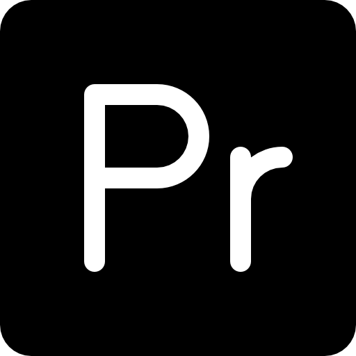

Projet d'affiches institutionelles
Le CV Vidéo est un projet qui consiste à présenter notre cv de manière visuelle grâce à une
vidéo.
Ce projet doit nous représenter, montrer nos expériences ainsi que nos passions. Il y avait une
seule contrainte: parler en anglais.
Grâce à ce projet j’ai pu développer mes compétences d'utilisation du logiciel Premiere pro
ainsi que mes compétences en tournage vidéo et écriture d’un script .
Outils : 
Savoirs :
Tournage des extraits vidéos
Réalisation d’un script en anglais
Utiliser des outils de recherche trouver la bonne bande son
Savoir sélectionner les bons extraits
Année : 2ème année
Seul/binôme/groupe : Seule